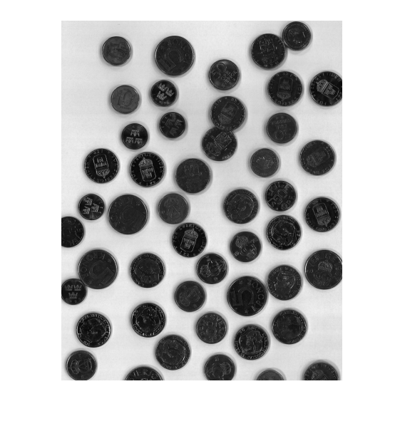
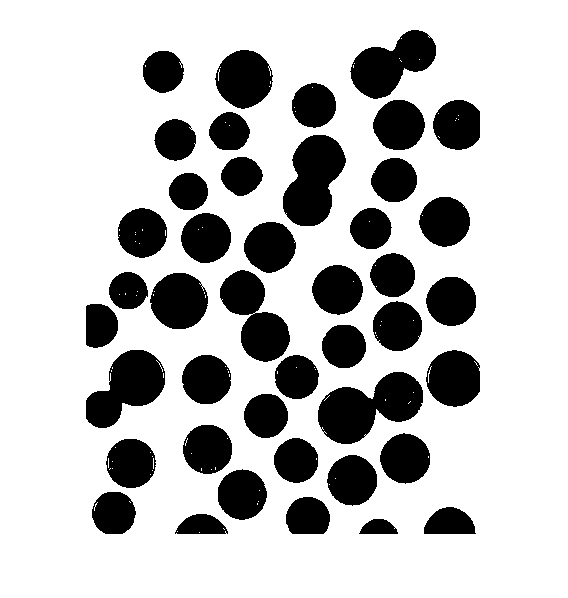
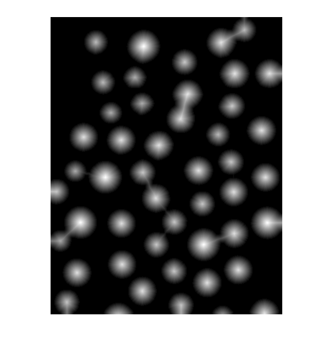
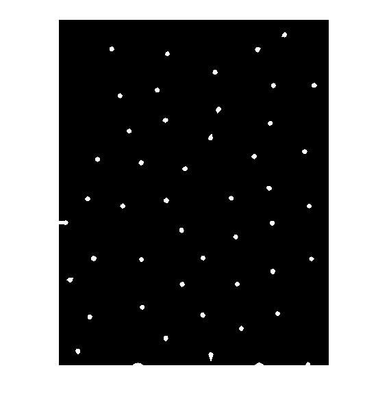
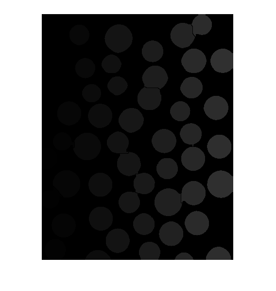
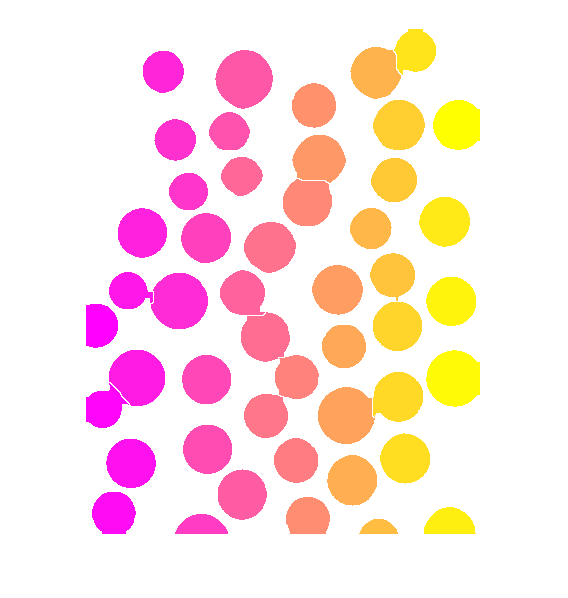
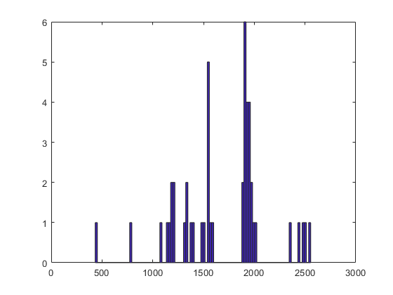

Contents
clear;
close all;
I = imread('lab3/images/coins.tif');
figure;
imshow(I);

convert image to b/w based on automated threshold detection
figure;
Ibw = im2bw(I,graythresh(I));
imshow(Ibw);

remove bright spots on coins
figure;
Iclean = imclose(Ibw,strel('disk',3));
Iclean = imopen(Ibw,strel('disk',3));
imshow(Iclean);
apply dist transform to detect coins centers
figure;
Idist = bwdist(Iclean);
imshow(mat2gray(Idist));

remove small noisy max values for watershed
figure;
Idistext = imextendedmax(Idist,3);
imshow(Idistext);

figure;
Idistext = -Idistext;
Idistext(Iclean) = Inf;
Iwshed = watershed(Idistext,8);
Iwshed(Iclean) = 0;
imshow(Iwshed);

label objects
figure;
Ilabel = bwlabel(Iwshed);
Irgb = label2rgb(Ilabel,'spring');
imshow(Irgb);

find properties of objects
figure;
F = regionprops(Ilabel,'all');
Areas = [F.Area];
hist(Areas,100);
